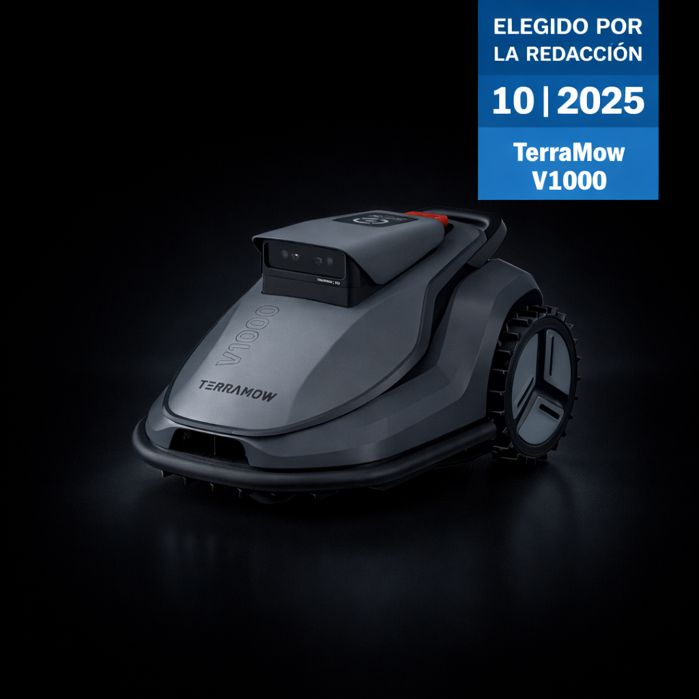
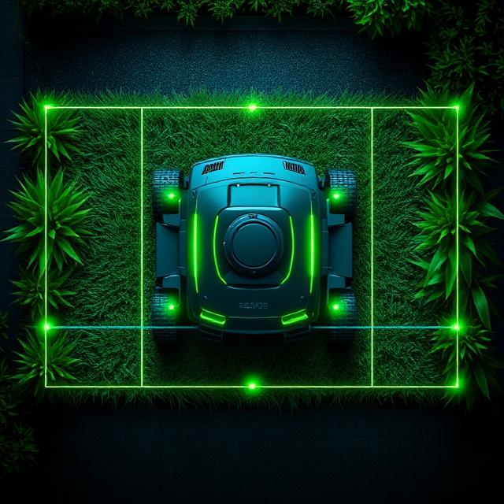
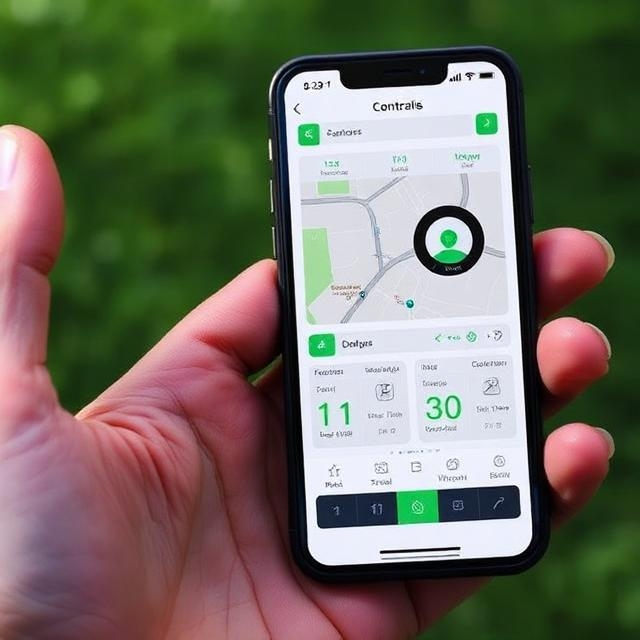
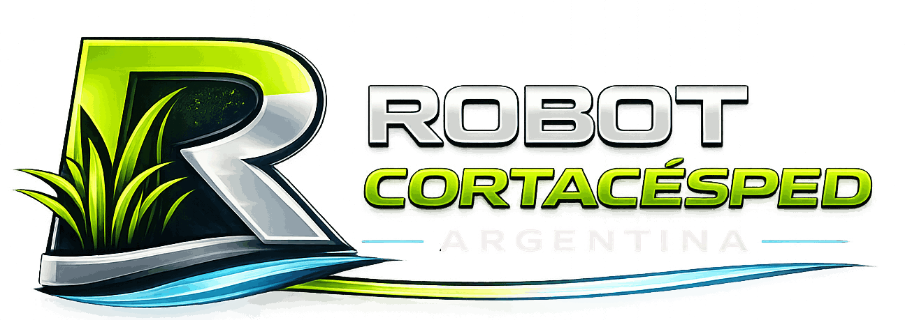

Distribuidor autorizado de TerraMow
¿Todavía
cortás el pasto?
Dejá que
lo haga él.
Robot cortacésped con IA
TerraMow V1000

Hasta 1200 m²
Triple cámara
Evasión de obstáculos 3D

0
cables.
0 antenas.
Mapeo inteligente
Recorre tu jardín con sus cámaras y arma el mapa solo. Sin enterrar un cable.
Hecho para jardines de verdad
Corta solo.
Vuelve solo.
0 m²
de cobertura
< 0 dB
súper silencioso
0°
de pendiente
IPX6
resiste la lluvia

App TerraMow
Todo desde
tu celular.
✓Horarios, zonas y altura de corte
✓Vuelve solo a cargar
✓Detecta la lluvia

Tu jardín perfecto
sin mover un dedo.
+54 9 2494 31-8185
robotscortacesped.com.ar
✓ Garantía✓ Envíos a todo el país✓ Soporte local